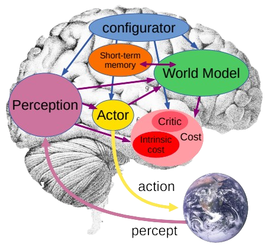

The Epistemological Crisis of Generative AI
The field of artificial intelligence currently finds itself at a critical turning point. The dominant approach, driven by the enormous success of Large Language Models (LLMs) and systems that generate content automatically, has produced results that are impressively fluent. These systems can use language with a skill that appears similar to human reasoning, yet they remain fundamentally disconnected from the physical reality they claim to describe. This report argues that the current path—making auto-regressive models larger and larger with more parameters and more data—is approaching a limit that falls short of true Autonomous Machine Intelligence (AMI) [LeC22]. The main problem with the generative approach lies in how it learns: by predicting the next token (word piece) or reconstructing the next pixel. This is a mechanism of approximation, not genuine understanding. When an LLM predicts how a physical object will move, it does not actually simulate the physics of mass and momentum. Instead, it retrieves a statistical pattern of how humans typically describe such movements in text. It works in the separate, symbolic world of language, or the complex, noisy world of pixels, rather than in the continuous, abstract space of underlying reality [Sha22]. To close the gap between statistical imitation and real understanding, we must move away from the goal of generation and toward prediction in latent space. We must build systems that construct an internal World Model—a simulation of the environment that captures meaningful cause and effect while filtering out the irrelevant details of sensory noise. This document serves as both a foundational text and a practical guide for constructing such a system. It explains the theoretical shift from probabilistic models to Energy-Based Models (EBMs), details the Joint-Embedding Predictive Architecture (JEPA), and provides a complete, step-by-step methodology for implementing a Video-JEPA (V-JEPA) using the Moving MNIST dataset as a simplified example of physical reality.
The Auto-Regressive Trap: System 1 without System 2
To understand why we need World Models, we must first identify the problems with current AI systems. Auto-regressive models, such as the Transformer architectures that power GPT-4 or Llama, work in a way similar to ”System 1” thinking in human psychology—fast, automatic, and reactive [Kı25]. They generate responses one token (word piece) at a time, with each step based only on what came before. This process is fundamentally unable to plan ahead. Planning requires the ability to imagine multiple possible futures, evaluate how good each outcome would be, and choose the best path before taking the first action. An auto-regressive model, by its very nature, commits to an output immediately. It speaks without thinking first [Let24]. Additionally, applying this generative approach to visual information—predicting the next video frame pixel by pixel—is both computationally expensive and conceptually flawed. The world is complex and filled with random, unpredictable details. The texture of a carpet, the random movement of leaves in the wind, or the exact reflection of light on water are high-entropy details that are largely unpredictable and often irrelevant to the actual task. A generative model trained to reconstruct these pixels must use enormous capacity to model this noise. If it fails to predict the exact texture of a leaf, it receives a high error penalty, even if it correctly predicts where the leaf is generally located. This misalignment of goals forces the model to focus on small, detailed features at the expense of understanding high-level, meaningful dynamics.Claude is AI and can make mistakes. Please double-check responses [Sha22].
The Biological Counter-Proof
Biological intelligence provides clear evidence that pixel-level prediction is unnecessary for understanding. A human infant does not learn the physics of the world by predicting the brightness value of every light receptor in their retina. Instead, the infant observes the world and builds an internal abstraction—a model—of object permanence, gravity, occlusion, and inertia. By the age of a few months, long before learning language, an infant possesses ”common sense” physics. They show surprise when an object passes through a solid wall or when it disappears without explanation. This surprise is the result of a prediction error in their internal World Model. This World Model allows biological agents to perform ”System 2” thinking: slow, careful reasoning and planning. It enables an agent to imagine the consequences of its actions without risking physical harm. It allows for the simulation of ”what if” scenarios (”What would happen if I dropped this glass?”). The goal of AMI research is to create this capability in artificial systems. We must move from machines that reproduce the surface appearance of the world to machines that understand the underlying structure of the world.
The Architecture of Autonomous Machine Intelligence
To replicate the capabilities of biological intelligence, a modular cognitive architecture for AMI was proposed in [LeC22]. This architecture is not a single neural network but a system of interacting components, centered around the World Model. Each module plays a distinct role in the perception-action loop, enabling the agent to reason, plan, and learn from observation (Figure 1).

The Six Core Modules
The architecture comprises six distinct modules, each differentiable and trainable, allowing gradients to propagate through the entire system (Table 1).
| 🧩 Module | ⚙️ Function | 🧬 Biological Analogy |
|---|---|---|
| Configurator | Acts as the executive controller. Sets goals and dynamically modulates the parameters of other modules based on the current task. Determines what the agent should do. | Prefrontal Cortex (Executive Function) |
| Perception | Estimates the current world state sₜ from sensory input xₜ. Filters noise and extracts relevant semantic features. |
Sensory Cortex (Visual / Auditory) |
| World Model | Internal simulator. Predicts future states sₜ₊₁ from current states sₜ and hypothetical actions aₜ. Can infer missing state information. |
Hippocampus / Frontal Cortex |
| Cost | Computes the “energy” or “discomfort” of a state. Combines intrinsic drives (e.g., energy minimization) with extrinsic, task-specific objectives. | Amygdala / Basal Ganglia (Reward–Pain System) |
| Actor | Proposes candidate action sequences to minimize predicted future cost. Does not act directly—feeds proposals to the World Model for evaluation. | Premotor Cortex |
| Short-Term Memory | Maintains recent sequences of states, actions, and costs, enabling temporal context for prediction and planning. | Working Memory |
The Centrality of the World Model
Among these, the World Model is the most critical and the most challenging to construct. It is the engine of prediction. The World Model must satisfy two competing requirements:
- Informativeness: The state representation must contain enough information to distinguish between functionally different situations (e.g., the difference between a car moving towards you vs. away from you).
- Predictability: The state representation must discard information that is unpredictable or irrelevant (e.g., the exact pattern of clouds in the sky, unless the task is weather forecasting).
Standard generative models fail the second requirement by trying to predict everything. Purely invariance- based models (like contrastive learning) risk failing the first by collapsing distinct states into identical rep- resentations if the data augmentation views are too aggressive [Und25]. The Joint-Embedding Predictive Architecture (JEPA) is designed specifically to navigate this trade-off.
Theoretical Foundations: From Probability to Energy
The mathematical framework underpinning most current AI is probabilistic modeling. We attempt to estimate \(P(Y|X)\), the probability distribution of the output given the input.
The Normalization Constraint
While rigorous, this framework imposes a severe constraint: the distribution must normalize (sum to one).
In high-dimensional spaces like video, calculating the normalization constant (the partition function) is intractable. This forces researchers to:
- Rely on approximations.
- Restrict the model to simplified distributions (like Gaussians in VAEs) that do not match the complexity of the real world [LeC].
Energy-Based Models (EBMs)
We advocate for abandoning the probabilistic straitjacket in favor of Energy-Based Models (EBMs).
An EBM does not attempt to model probabilities. Instead, it defines a scalar energy function \(E(X, Y)\) that measures the "compatibility" between an input \(X\) and a potential output \(Y\).
Low Energy (Compatible)
The pair \((X, Y)\) is compatible. \(Y\) is a plausible continuation of \(X\).
High Energy (Incompatible)
The pair \((X, Y)\) is incompatible. \(Y\) is physically impossible or semantically unrelated to \(X\).
Inference in an EBM becomes an optimization problem: finding the \(Y\) that minimizes the energy for a given \(X\):
This framework removes the need for normalization, granting us immense flexibility in designing the architecture of the energy function.
The Collapse Problem in Self-Supervised Learning
The primary challenge in training EBMs, particularly in self-supervised learning (SSL) where we do not have labels, is Collapse.
In SSL, we typically have pairs of compatible data points \((x, y)\)—for example, two frames from the same video. We want to train the model such that \(E(x, y)\) is low.
The Naive Approach
A naive approach would simply minimize the distance between their representations:
The Catastrophic Failure Mode
The fatal flaw of this objective is that the encoder learns to map every input to a constant vector (e.g., zero).
The loss is minimized perfectly, but the representations contain zero information. The energy surface becomes completely flat (zero everywhere), making the model useless for discrimination or planning.
Strategies for Preventing Collapse
To train a useful EBM, we must ensure that the energy is low for compatible pairs (positive samples) and high for incompatible pairs (negative samples). We term this "shaping the energy landscape."
There are three primary families of techniques to achieve this [Red25b]:
1. Contrastive Methods
Explicitly push up the energy of negative samples. This requires mining "negative" pairs—inputs that are definitely unrelated.
- Pros: Highly effective (e.g., SimCLR).
- Cons: Inefficient because the space of "incorrect" answers is infinite. The model must see a vast number of negatives to define the energy boundary [Mina].
2. Regularization Methods
Impose constraints on the information content of the embeddings. Methods like VICReg (Variance-Invariance-Covariance Regularization) explicitly penalize collapse by adding loss terms:
- Variance Term: Forces neurons to vary across the batch (prevents constant output).
- Covariance Term: Forces neurons to capture different features (prevents redundancy).
3. Architectural Methods (The JEPA Approach)
Design the architecture such that the target representation is not fixed but evolves in a way that the predictor cannot easily cheat.
This often involves asymmetry, such as using a "Teacher" network that is an Exponential Moving Average (EMA) of the "Student" network. This creates a moving target that prevents the student from converging to a trivial constant solution [Red25a].
Joint-Embedding Predictive Architectures (JEPA)
The JEPA represents the convergence of World Modeling theory and Energy-Based collapse prevention.
Non-Generative by Design
JEPA is a non-generative architecture: it does not reconstruct \(x\). Instead, it predicts the latent representation of \(y\) from the latent representation of \(x\).
The Core Mechanism
The JEPA consists of three primary sub-networks:
- Context Encoder (Student): Processes the observed part of the input (the context, \(x\)) to produce a representation \(s_x\).
- Target Encoder (Teacher): Processes the part of the input to be predicted (the target, \(y\)) to produce a representation \(s_y\).
- Predictor: A network that takes \(s_x\) (and potentially a latent variable \(z\) or action \(a\)) and outputs a prediction \(\hat{s}_y\).
The objective is to minimize the distance between the prediction and the target in embedding space:
Preventing Collapse via EMA
Critically, the Target Encoder is not updated via gradient descent from this loss. Doing so would allow the two encoders to conspire to output a constant.
Instead, the Target Encoder's weights \(\phi\) are updated as an Exponential Moving Average (EMA) of the Context Encoder's weights \(\theta\):
Where \(\tau\) is a decay parameter typically close to 1 (e.g., 0.996). This asymmetry ensures that the target representation is stable and semantically rich, forcing the predictor to learn the underlying dynamics to match it.
I-JEPA: Image-Based World Modeling
I-JEPA applies this principle to static images. It treats the image as a "world" where spatial relationships define the physics.
- Context: A subset of image patches.
- Target: A different, masked subset of patches.
By predicting the embeddings of the missing patches, the model learns high-level semantic features (object parts, shapes) without ever generating pixels.
Overcoming Texture Bias
This approach avoids the "texture bias" of generative models like Masked Autoencoders (MAE).
While MAE wastes capacity reconstructing high-frequency noise (pixels), I-JEPA focuses solely on semantic content by operating in the latent space.
V-JEPA: The Engine of Physical Understanding
V-JEPA extends this to the temporal domain, which is the natural domain of World Models. In V-JEPA, the input is a video sequence.
- Context: A set of spatio-temporal blocks (tubelets) from the video.
- Target: A different set of tubelets, often representing the future frames or occluded regions.
- Physics as Prediction: By predicting the representation of future frames, the model implicitly learns the laws of physics.
- To predict where a ball will be in \(t + 1\), it must understand velocity and inertia.
- To predict the representation of a person walking behind a tree, it must understand occlusion and object permanence [App25].
Crucial: The Masking Strategy
The masking strategy in V-JEPA is critical to success.
- Random Masking (Bad): If we mask random scattered tubelets, the model can simply interpolate from neighbors (spatial smoothing).
- Block Masking (Good): To force the learning of dynamics, we must mask entire blocks of time or space. This forces the model to bridge the gap using its understanding of motion rather than local texture statistics [ABB+23].
The Challenge of Stochasticity and Latent Variables
The real world is not deterministic.
- Deterministic: If an agent drops a pen, it will fall.
- Stochastic: If an agent observes a car approaching an intersection, the car might turn left, right, or go straight.
The Flaw of Averaging
A World Model that outputs a single deterministic prediction \(\hat{s}_{t+1}\) will inevitably predict the average of all possible futures.
In embedding space, the average of a "left-turn representation" and a "right-turn representation" might be a "crash-into-the-divider representation" or a blurry, non-descript state.
Latent Variable \(z\)
Handling Multimodal Futures
To handle multimodal futures, the JEPA architecture supports a latent variable \(z\). The predictor becomes a function of both the context and this latent variable:
The variable \(z\) encodes the information present in the future (\(y\)) that is not present in the past (\(x\)).
Generative vs. EBM Frameworks
The treatment of \(z\) differs fundamentally between paradigms:
- Generative Framework: We would sample \(z\) from a fixed prior distribution.
- EBM Framework: \(z\) is an input that minimizes the energy.
This allows the model to "explain away" the uncertainty. For a specific future \(y\) (e.g., the car turned left), there exists a \(z\) (representing the "decision to turn left") that makes the prediction match the target.
Determinism in Simplified Environments
Practical Implementation: Moving MNIST
For the practical implementation guide in this report, we will focus on the Moving MNIST dataset. This environment is largely deterministic:
- Dynamics: Digits move with constant velocity.
- Physics: Digits reflect off walls deterministically.
- Ambiguity: There is only minor ambiguity during occlusion (e.g., determining which digit is on top).
Simplification Strategy
Because the physics are rigid, we can initially simplify our architecture by omitting the explicit latent \(z\).
We rely on the inherent capacity of the predictor to approximate the dominant mode of the distribution. This reduces architectural complexity for the learner while still capturing the core principles of the JEPA.
Practical Implementation Strategy: The Micro-World
We now transition from theory to practice. The request requires a step-by-step guide to building a World Model using a small, open-source dataset.
The Selection
We select Moving MNIST as the ideal "Micro-World."
Why Moving MNIST?
Moving MNIST consists of sequences (typically 20 frames) of \(64 \times 64\) pixel images containing two handwritten digits bouncing inside a frame.
- Physics: It exhibits strict physical laws: conservation of momentum (velocity), reflection (bouncing), and depth (occlusion).
- Manifold Hypothesis: The high-dimensional pixel space (\(20 \times 64 \times 64 = 81,920\) dimensions) is generated by a very low-dimensional set of latent variables: the position \((x, y)\), velocity \((v_x, v_y)\), and digit identity (\(ID\)) for two objects. A successful World Model should theoretically compress the video down to this low-dimensional manifold.
- Compute Efficiency: Unlike Kinetics-400 or real-world robotics data, Moving MNIST can be trained on a single consumer GPU (or even a high-end CPU in a reasonable time for debugging), making it accessible for a "from scratch" guide.
The Data Structure
The dataset is typically generated on-the-fly to prevent overfitting (infinite data regime) or downloaded as a fixed set.
- Input Tensor:
(Batch, Time, Height, Width) - Dimensions:
(B, 16, 64, 64)(We use 16 frames for standard V-JEPA input). - Normalization: Pixels should be normalized to the range
[0, 1]or[-1, 1].
Self-Supervised Learning
We do not use the class labels (which digit is which) for training. This is Self-Supervised Learning.
The signal comes from predicting the masked portions of the video, not from ground-truth labels.
Phase 1
Phase 1 is the foundation. If the data doesn't obey physics, the World Model has nothing to learn.
The Architect
We are acting as the "Creator" of this Micro-World. We define the space, time, matter, and the laws of physics.
Overview: The 5-Step Recipe
We will break the data generation into five logical steps:
- The Universe: Defining the empty void (Space and Time).
- The Atoms: Getting the raw matter (MNIST digits).
- The Big Bang: Setting initial positions and velocities.
- The Laws of Physics: Updating positions and handling bounces.
- Rendering: Drawing the "atoms" onto the "universe" (handling overlap).
Step 1: The Universe (The 5D Tensor)
In Deep Learning, a video is just a 5-dimensional block of numbers.
The Dimensions: (Batch, Time, Channels, Height, Width)
- Batch (B): How many parallel universes we simulate at once (e.g., 16 videos).
- Time (T): The length of history (e.g., 16 frames).
- Channels (C): 1 (Black & White).
- Height/Width (H, W): \(64 \times 64\) pixels.
Step 2: The Atoms (The Digits)
We need objects. We use standard MNIST handwritten digits.
- The Problem: Standard MNIST is \(28 \times 28\) pixels. Our world is \(64 \times 64\).
- The Preparation: We load the MNIST dataset and keep it in memory. We treat these \(28 \times 28\) grids as our "solid objects."
Step 3: The Big Bang (Initialization)
For every video in the batch, we need to decide where the digits start and where they are going.
- Position (\(P\)): A random coordinate \((x, y)\) inside the \(64 \times 64\) box.
- Constraint: We don't want the digit to spawn strictly on the edge, so we limit the spawn area to \(64 - 28 = 36\).
- Velocity (\(V\)): How fast and in what direction?
- We pick a random angle \(\theta\) between \(0\) and \(2\pi\) (\(360^\circ\)).
- We convert this angle into a velocity vector \((v_x, v_y)\) using trigonometry:
Step 4: The Laws of Physics (The Simulation Loop)
This is the most critical part. We loop through time (\(t = 0\) to \(t = 15\)) and update the state of the world.
Universal Law 1: Momentum
Objects move in a straight line unless acted upon.
Universal Law 2: Reflection
If an object hits a wall, its velocity in that direction flips sign.
- If \(x < 0\) or \(x > \text{limit}\): \(\quad v_x = -v_x\)
- If \(y < 0\) or \(y > \text{limit}\): \(\quad v_y = -v_y\)
Step 5: Rendering (Occlusion)
We know where the digit is (e.g., \(x = 10.5, y = 5.2\)). But computers usually work with integers for array slicing.
- Discretization: Round the float coordinates to the nearest integer \((r, c)\).
- Slicing: We copy the \(28 \times 28\) digit image into the \(64 \times 64\) canvas at those coordinates.
- Occlusion (The "Over" Operator): What if two digits overlap?
- In the real world, the front object blocks the back object.
- In Moving MNIST, we usually use the MAX operator. If pixel A is white and pixel B is black, the result is white. This simulates "bright light objects."
Complete Implementation
The Assemblage: MicroWorldFactory
We now combine the atoms, the void, and the laws of physics into a single, reusable class.
Exercise 1: The "Teleportation" Catastrophe (Speed)
Let's break the universe we just created.
The Goal: Observe the limitations of discrete time steps.
The Change: Go to the physics loop in create_universe. Find where we update pos1. Change the speed modifier from 3.0 to 20.0.
.png)
Exercise 2: The "Ghost" Catastrophe (Occlusion)
Now, let's break the visual physics.
The Goal: Understand the difference between emission (light) and occlusion (matter).
The Change: First, restore the speed to 3.0. Now, find the rendering line with torch.max. Change it to + (addition).
# OLD CODE (Correct Occlusion)
# videos[...] = torch.max(videos[...], digit1)
# NEW CODE (The Ghost Bug)
# We simply add the pixel values together
videos[...] = videos[...] + digit1
 (1).png)
Exercise 3: The "Frozen Time" Catastrophe (Static)
Finally, let's break time itself.
The Goal: Understand the danger of trivial solutions.
The Change: Restore torch.max. Now, change the speed to 0.0.
.png)
Phase 2: Building the Brain (Neural Network Architecture)
Phase 2 is where we build the "brain" (the Neural Network) that will observe the "universe" you built in Phase 1.
The Blueprint
We are building a V-JEPA (Video Joint Embedding Predictive Architecture).
This sounds complex, but it is effectively just three simple LEGO blocks snapped together:
- The Encoder (The Eye): Looks at video and converts pixels into numbers (embeddings).
- The Masking (The Game): We hide parts of the video to make the task difficult.
- The Predictor (The Brain): Tries to guess the missing parts based on what it can see.
The Encoder: The Eye (Tubelet Embedding)
Standard images are 2D. Videos are 3D (Time + Height + Width). We cannot feed raw pixels directly to a Transformer. We must chop the video into little cubes. These cubes are called Tubelets.
The Logic:
- Video Size: \(16 \text{ frames} \times 64 \text{ height} \times 64 \text{ width}\)
- Tubelet Size: \(1 \text{ frames} \times 4 \text{ height} \times 4 \text{ width}\)
The Tubelet Math
How many tokens does this generate?
- Time: \(16 \div 1 = 16 \text{ slices}\)
- Height: \(64 \div 4 = 16 \text{ slices}\)
- Width: \(64 \div 4 = 16 \text{ slices}\)
- Total Tokens: \(16 \times 16 \times 16 = \mathbf{4096 \text{ little cubes}}\)
The Code (PyTorch)
We use Conv3d. This is a 3D scanner that slides over the video.
- Kernel: The size of the scanner (the tubelet).
- Stride: How much the scanner moves. We set
stride = kernelso the cubes don't overlap.
| encoder.py | |
|---|---|
Positional Embeddings: The GPS
Transformers are "blind" to order. If you shuffle the video cubes, the Transformer doesn't know the difference. We must give each cube a GPS coordinate.
Innovation: Factorized 3D Embeddings
Instead of giving one ID number (e.g., "Cube #45"), we give three coordinates:
- Time: "Time = 3"
- Row: "Row = 2"
- Column: "Column = 5"
This teaches the model physics: "Time 3" is logically close to "Time 4," whereas "Cube #45" has no numerical relation to "Cube #46" in a flattened list.
The Code
We create three separate lookup tables (learnable parameters) and add them together to form the final coordinate.
The Full Encoder (Eye + GPS + Brain Cells)
Now we stack standard Transformer layers on top. This is the "Context Encoder."
It combines the "Eye" (Tubelet Embeddings), the "GPS" (Positional Embeddings), and the "Brain Cells" (Attention Blocks) into a single processing unit.
The Masking: The Game
This is critical. We randomly hide parts of the video to create a self-supervised learning task.
The Rules
- Context: The parts we show the model (The Clues).
- Target: The parts we hide and ask the model to guess (The Objective).
The Strategy:
We use random masking for simplicity in this guide. This means we flip a coin for every tubelet to decide if it is visible or hidden.
Production: Hard Mode
In a full-scale production environment (like the real V-JEPA paper), they use "Block Masking".
This involves hiding large, contiguous chunks of space-time (e.g., covering the entire right half of the video for 5 frames). This prevents the model from "cheating" by just interpolating from neighboring pixels and forces it to understand object permanence.
The Predictor: The "Dreamer"
This is the hardest part to understand conceptually. The Predictor receives the Context (what it saw) and must output the Target (what was hidden).
The Challenge
How does the Predictor know which part was hidden?
We cannot just give it a blank void. We must give it a Mask Token (a learnable placeholder) combined with the Target GPS (positional embedding).
The Analogy
To understand the flow, imagine a conversation between the components:
internal_monologue.log
Encoder (The Eye):
"I see a ball at Time 1, Position A."
Predictor (The Dreamer) receives:
"Here is the embedding for the ball at Time 1. Plus a [BLANK TILE] at Time 2, Position B. Fill in the blank."
Predictor thinks:
"If the ball was at A at Time 1... physics says it must be at B at Time 2. I will fill the blank with 'Ball'."
Checkpoint: Understanding the Flow
Before we proceed, let's lock in the conceptual pipeline.
The Logic Loop
Do you see the big picture?
- Phase 1 gave us the raw video (The Ground Truth).
- Phase 2 Encoder turns raw video into "meaningful vectors" (Embeddings).
- Phase 2 Masking hides some of these vectors (The Challenge).
- Phase 2 Predictor takes the visible vectors + "Mask Placeholders" and tries to hallucinate the hidden vectors.
- The Goal: If the predictor succeeds, it means it "understands" the physics of the video.
(e.g., If it can accurately guess where the ball went without seeing it, it must understand velocity).
[Phase 1: Raw Video]
|
| (Input)
v
[Phase 2: Encoder]
|
| (All Embeddings)
v
{Masking} ------------------------.
| |
| (Visible Context) | (Hidden Target)
v v
[Phase 2: Predictor] <========= [Target Vectors]
^ ^
| |
(Mask Placeholders) (Loss Function)
| |
[Predicted Vectors] =================='
|
'--> (If match is good, Physics is learned)
Trainer
Congratulations!
You now have a trained V-JEPA. But we have a problem: We cannot “see” what the model is thinking. The model outputs a list of abstract vectors (embeddings). It doesn’t output an image. How do we prove it actually understands physics? We give it a Final Exam. We will use a technique called Linear Probing. Freeze the Brain: We lock the weights of your trained model. It is not allowed to learn anymore. The Question: We ask it: “Based on these numbers you are thinking, where is the digit?” The Test: We train a tiny, single-layer neural network (a Linear Layer) to answer this. If this tiny layer can extract the correct (x, y) coordinates from your embeddings, it proves your model has successfully learned the concept of “Position” and “Velocity” purely from watching videos.
Before running the full exam, let’s look at the “Eye” of the model (the first Convolutional layer). Good Result: The filters look like gradients, edges, or moving blobs. Bad Result: The filters look like random TV static (noise). Run this code to inspect your trained model:
Visualizing the Learned Eye
How do we know the model is actually learning? One of the best sanity checks in Deep Learning is to inspect the first-layer filters.
If the filters look like random static (noise), the model hasn't learned anything. If they look like edges, curves, or textures (Gabor filters), the model is beginning to "see."
The Final Exam (Linear Probe Code)
We need to modify our Factory to give us the Answers (the actual coordinates) so we can grade the exam.
What is Linear Probing?
Linear Probing is the standard way to evaluate Self-Supervised Learning (SSL) models. Think of it as a Standardized Test for your AI.
- The Student (Your Encoder): We take your trained World Model and freeze its weights. It is not allowed to learn anymore. It can only "see" and describe what it sees.
- The Exam (The Probe): We attach a tiny, simple neural network (a few linear layers) on top of the frozen Encoder.
- The Subject: We ask the Probe to solve a specific task using only the descriptions provided by the Student.
The Logic
If the tiny Probe can predict the exact pixel coordinates of the digit, it proves that the frozen Encoder must have learned the concept of "Position" inside its embeddings.
If the Encoder output was just random noise, the Probe would fail.
The Code Implementation
Copy and run this entire block. It will generate a new test set, extract features using your frozen model, and train the probe.
Implementation Note
This code is a template. Depending on your specific embed_dim, seq_len, or patch_size settings from Phase 2, you may need to tweak the dimension reshaping in extract_features (specifically the .view() shapes).
Ensure the input_dim of the probe matches the output dimension of your specific Encoder.
| linear_probe.py | |
|---|---|
1 2 3 4 5 6 7 8 9 10 11 12 13 14 15 16 17 18 19 20 21 22 23 24 25 26 27 28 29 30 31 32 33 34 35 36 37 38 39 40 41 42 43 44 45 46 47 48 49 50 51 52 53 54 55 56 57 58 59 60 61 62 63 64 65 66 67 68 69 70 71 72 73 74 75 76 77 78 79 80 81 82 83 84 85 86 87 88 89 90 91 92 93 94 95 96 97 98 99 100 101 102 103 104 105 106 107 108 109 110 111 112 113 114 115 116 117 118 119 120 121 122 123 124 125 126 127 128 129 130 131 132 133 134 135 136 137 138 139 140 141 142 143 144 145 146 147 148 149 150 151 152 153 154 155 156 157 158 159 160 161 162 163 164 165 166 167 168 169 170 171 172 173 174 175 176 177 178 179 180 181 182 183 184 185 186 187 188 189 190 191 192 193 194 195 196 197 198 199 200 201 202 203 204 205 206 207 208 209 210 211 212 213 214 215 216 217 218 219 220 221 222 223 224 225 226 227 228 229 230 | |
Phase 4: The Action-Conditioned World Model
Now that our AI understands the laws of physics (Phase 1 & 2), we give it a body. We transition from a passive observer to an active agent.
1. The "Motor Cortex" (Action Model)
We attach a secondary neural network to the frozen Encoder. This is the Action Model.
The Function
- Input: The current "thought" (Latent State \(z_t\)) + An Action (Velocity Vector \(a_t\)).
- Output: The predicted next "thought" (\(z_{t+1}\)).
- The Goal: It learns the transition function of the universe: $\(f(z_t, a_t) \rightarrow z_{t+1}\)$
The Architecture: Cross-Attention for Control
How do we fuse a "Thought" (complex video tokens) with an "Action" (simple velocity vector)?
We use Cross-Attention. The "Thought" is the Query, and the "Action" acts as the Key/Value that modulates the thought.
The "Interpreter" (Position Decoder)
The Motor Cortex works entirely in "dream space" (embeddings). To plan a path, we need to translate these dreams back into coordinates \((X, Y)\) so we can calculate the distance to our goal.
The Training Loop
We do not need to label data by hand. We can reuse our simulator to self-supervise the agent.
- Freeze the Eye: The Encoder is now locked. It provides stable representations of the world.
- Random Actions: We generate videos where we randomly "push" the digit around.
- Prediction: We train the
ActionConditionedPredictorto minimize the difference between its predicted latent state and the actual latent state produced by the Encoder for the next frame.
Mathematical Objective
We minimize a composite loss function \(\mathcal{L}_{total}\) that ensures the agent predicts both the correct abstract concept (Latent State) and the correct physical location (decoded position).
1. Dynamics Loss (Latent Space):
2. Position Loss (Physical Space):
To ground the "dreams" in reality, we force the decoded position of the predicted state to match the true coordinate \(p_{t+1}\).
The MPC Planner (The Strategist)
Once the Motor Cortex is trained, we don't just predict one step; we plan. We use Model Predictive Control (MPC).
The Planning Loop (CEM)
We use the Cross-Entropy Method (CEM), a sampling-based optimization algorithm.
- Initialize: Create a Gaussian distribution \(\mathcal{N}(\mu, \sigma)\) for action sequences.
- Sample: Draw \(N=200\) random action sequences from this distribution.
- Evaluate: Run these sequences through the
predictorto get latent states \(z_{1:T}\). Decode positions and calculate distance to the goal. - Select Elites: Pick the top \(10\%\) sequences with the lowest cost.
- Refit: Update \(\mu\) and \(\sigma\) to match the elites.
- Repeat: Iterate 5 times to refine the plan.
Execution (The Demo Suite)
To verify the system, we implement a simulation harness (simulate_rollout) that manually executes physics using the exact logic from the MicroWorld, and a demo runner that performs open-loop and closed-loop control.
| demo.py | |
|---|---|
1 2 3 4 5 6 7 8 9 10 11 12 13 14 15 16 17 18 19 20 21 22 23 24 25 26 27 28 29 30 31 32 33 34 35 36 37 38 39 40 41 42 43 44 45 46 47 48 49 50 51 52 53 54 55 56 57 58 59 60 61 62 63 64 65 66 67 68 69 70 71 72 73 74 75 76 77 78 79 80 81 82 83 84 85 86 87 88 89 90 91 92 93 94 95 96 97 98 99 100 101 102 103 104 105 106 107 108 109 110 111 112 113 114 115 116 117 118 119 120 121 122 123 124 125 126 127 128 129 130 131 132 133 134 135 136 137 138 139 140 141 142 143 144 145 146 147 148 149 150 151 152 153 154 155 156 157 158 159 160 161 162 163 164 165 166 167 168 169 170 171 172 173 174 175 | |
References
-
[ABB+23] Mahmoud Assran, Johann Ballé, Charles Blondel, Jörg Bornschein, Mathilde Caron, Rianne Müller, Mahmoud Assran, Sylvain Gelly, and Gabriel Synnaeve. Self-supervised learning from images with a joint-embedding predictive architecture. CVPR, 2023. PDF Link (Accessed: Jan 5, 2026).
-
[App25] Apple Machine Learning Research. Rethinking JEPA: Compute-efficient video SSL with frozen teachers. 2025. Article Link (Accessed: Jan 5, 2026).
-
[Kı25] İlyurek Kılıç. Beyond next-token prediction: Yann LeCun’s JEPA and the quest for AI common sense — where everything is an abstraction. Medium, 2025. Article Link (Accessed: Jan 5, 2026).
-
[LeC] Yann LeCun. Energy-based learning. PDF Link (Accessed: Jan 5, 2026).
-
[LeC22] Yann LeCun. A path towards autonomous machine intelligence version 0.9.2. OpenReview, 62(1):1–62, 2022.
-
[Let24] Malcolm Lett. Critical review of LeCun’s introductory JEPA paper. Medium, 2024. Article Link (Accessed: Jan 5, 2026).
-
[Mina] Emergent Mind. Joint-embedding predictive architectures. Topic Link (Accessed: Jan 5, 2026).
-
[Minb] Emergent Mind. VICReg-based JEPA overview. Topic Link (Accessed: Jan 5, 2026).
-
[Red25a] Reddit r/MachineLearning. Why does BYOL/JEPA like models work? How does EMA prevent model collapse? 2025. Thread Link (Accessed: Jan 5, 2026).
-
[Red25b] Reddit r/singularity. Could someone explain what each of these architectures are that LeCun claims could lead to AGI? 2025. Thread Link (Accessed: Jan 5, 2026).
-
[Sha22] Shaped. Yann LeCun: A path towards autonomous machine intelligence. 2022. Blog Link (Accessed: Jan 5, 2026).
-
[Und25] Cogni Down Under. A new kind of AI is emerging and it’s better than LLMs? Medium, Dec 2025. Article Link (Accessed: Jan 5, 2026).
Appendix: Mathematical Formalism of V-JEPA Components
This appendix details the mathematical operations underpinning the Video Joint Embedding Predictive Architecture (V-JEPA). We decompose the model into four primary components: The Eye (Encoder), The GPS (Positional Embedding), The Game (Masking Strategy), and The Brain (Predictor).
The Eye: Mathematics of 3D Convolution
The "Eye" functions mathematically as a linear projection from the high-dimensional pixel space to a lower-dimensional feature space. We employ a 3D Convolutional Neural Network (CNN) operation to achieve this transformation.
The Input Tensor (\(V\))
The input video is represented as a 4D tensor (omitting the batch dimension for clarity):
Where:
- \(T=16\) (Time frames)
- \(H=64, W=64\) (Height and Width in pixels)
- The value range is normalized: \(V_{t,y,x} \in [-1, 1]\)
The Transformation (The Kernel \(K\))
The Conv3d layer learns a set of filters (weights). Assuming an embedding dimension of \(D=256\), we have 256 such filters. Each filter \(k\) is a spatiotemporal cube of weights:
This corresponds to a kernel size covering 2 frames in time and an \(8 \times 8\) pixel patch in space.
The Convolution Operation
To derive the scalar embedding value for a specific tubelet at grid position \((t, i, j)\) and filter \(k\), we compute the dot product between the video pixels and the kernel weights, adding a bias term \(b_k\). This operation is formally a weighted sum:
The Output (Flattening)
Applying this operation across the entire video volume yields a grid of embedding vectors. We flatten this 3D grid into a sequence of vectors, referred to as "tokens":
Where each token \(z_n \in \mathbb{R}^{256}\).
Summary: The Eye transforms a spatiotemporal block of 128 pixels (\(2 \times 8 \times 8\)) into a single vector of 256 scalars, effectively compressing local visual information (e.g., "contains a curved line moving right") into a latent representation.
The GPS: Mathematics of Factorized Embeddings
Transformers process inputs as sets, not sequences; a set \(\{A, B, C\}\) is mathematically identical to \(\{C, A, B\}\). Without explicit positional information (GPS), the model lacks the inductive bias to understand that Frame 1 temporally precedes Frame 2.
The Problem
Standard 1D positional embeddings assign a unique vector \(P_n\) to the \(n\)-th token in a flattened sequence:
However, in a video volume, token \(n=10\) might be spatially adjacent to token \(n=18\) (in the row below) or temporally adjacent to token \(n=74\) (in the next frame). A single scalar index \(n\) destroys these 3D relational structures.
The Solution (Factorized Addition)
To preserve 3D structure, we define three distinct vector spaces for positional embeddings:
- Time Space: \(E_T \in \mathbb{R}^{8 \times D}\)
- Height Space: \(E_H \in \mathbb{R}^{8 \times D}\)
- Width Space: \(E_W \in \mathbb{R}^{8 \times D}\)
For a token located at grid coordinates \((t, h, w)\), the positional embedding vector \(P_{(t,h,w)}\) is calculated as the element-wise sum of the three component vectors:
Why Summation?
One might ask: Why not concatenation? Concatenation would triple the dimension of the embedding vector (\(3 \times D\)). By using summation, we maintain the vector dimension \(D\). In high-dimensional geometry, the sum of different random vectors results in a new vector that is nearly orthogonal (unique) to the original components. The neural network learns to "disentangle" this sum to recover the underlying spatiotemporal coordinates.
The Game: Mathematics of Set Partitioning
The masking strategy employed in JEPAs is fundamentally a set theory operation designed to create a self-supervised learning signal.
The Universe of Indices (\(U\))
We define \(U\) as the set of indices for all tokens in the video:
The Partition
We randomly partition \(U\) into two disjoint subsets:
- Context Set (\(I_{context}\)): The indices of visible tokens.
- Target Set (\(I_{target}\)): The indices of hidden tokens.
This partition satisfies two conditions:
The Masking Ratio (\(\rho\))
The scalar \(\rho\) defines the difficulty of the task:
For example, if \(\rho = 0.6\), we obscure 60% of the tokens.
The Input Construction
We construct two distinct inputs for the neural networks based on this partition:
- Encoder Input (\(X_{enc}\)): Contains only the subset of vectors \(Z\) belonging to the context.
- Predictor Input (\(X_{pred}\)): A hybrid sequence containing real data from the context and learned placeholders for the targets.
Where \(M\) is a learnable "Mask Token" vector.
Crucial Math: The predictor receives the GPS coordinates (\(P_j\)) of the missing parts but not their content (\(z_j\)). This creates the query: "Given the surrounding context, what content belongs at coordinate \(P_j\)?"
The Brain: Mathematics of Self-Attention
The Predictor is a Transformer architecture. Its core mathematical operation is Scaled Dot-Product Attention, which allows the model to route information between tokens.
The Input Matrix (\(X\))
The input to a transformer block is a matrix of size \(N \times D\), where \(N\) is the number of tokens and \(D\) is the embedding dimension.
Projections
We project the input \(X\) into three distinct views using learnable weight matrices \(W_Q, W_K, W_V\):
- Queries (\(Q = X W_Q\)): Represents what the token is looking for.
- Keys (\(K = X W_K\)): Represents what the token contains.
- Values (\(V = X W_V\)): Represents the information the token will pass on.
The Attention Equation
The attention mechanism computes a weighted sum of values based on the similarity between queries and keys:
Interpretation:
- \(QK^T\): Calculates a similarity score (dot product) between every pair of tokens. For example, a "Mask Token at (Time 2, Pos A)" might generate a high dot product with a "Context Token at (Time 1, Pos A)" due to temporal proximity.
- Softmax: Normalizes these scores into probabilities that sum to 1. This forms the "attention map."
- \(\times V\): Computes the weighted average of the Values. If a Mask Token attends 90% to a specific Context Token, it aggregates 90% of that context's information vector.
The Optimization Goal (The Loss Function)
The objective is to minimize the distance between the Predictor's output for the masked regions (\(\hat{z}\)) and the Teacher's output (\(y\)). We typically utilize the L2 distance (Mean Squared Error):
Where:
- \(\hat{z}_j\): The latent vector predicted by the student network (the brain).
- \(y_j\): The latent vector extracted by the teacher network (the eye) from the full, unmasked video.
Gradient Descent: We calculate the gradient of the Loss \(\mathcal{L}\) with respect to the weights (\(\nabla W\)) and update the weights to minimize this error.
Summary of the Flow
- Eye: \(Pixels \xrightarrow{\text{Sum \& Dot Product}} Embeddings\)
- GPS: \(Embeddings \xrightarrow{\text{Vector Addition}} Located\_Embeddings\)
- Game: \(Located\_Embeddings \xrightarrow{\text{Set Split}} Context \cup Targets\)
- Brain: \(Context \xrightarrow{\text{Matrix Multiplication (Attention)}} Predictions\)